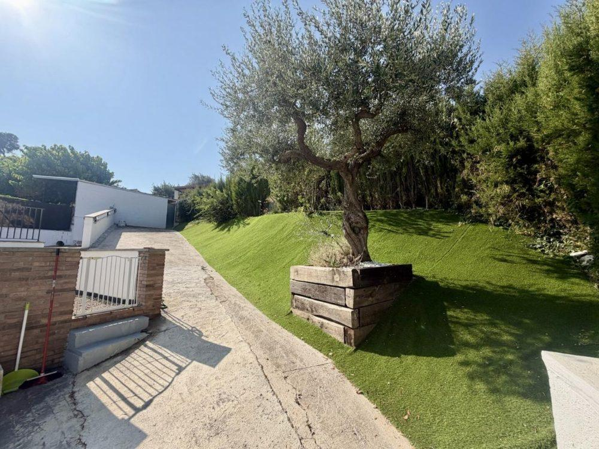
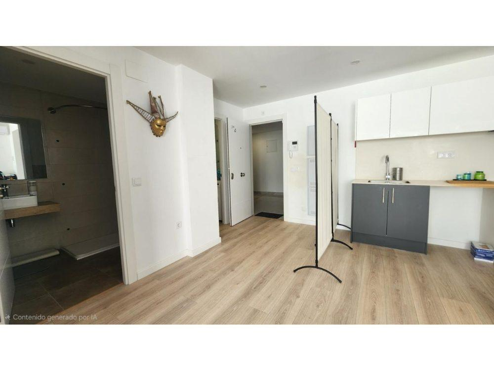
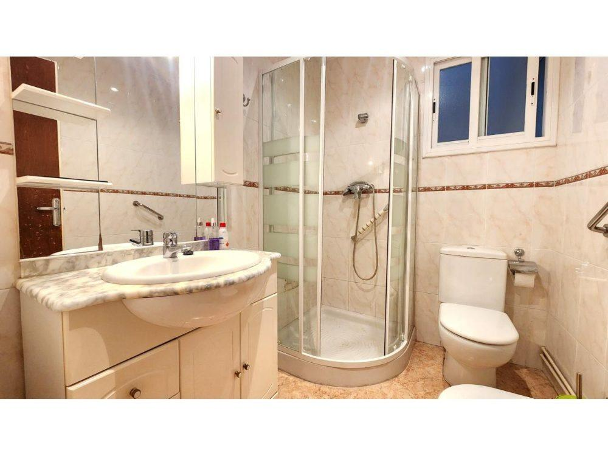
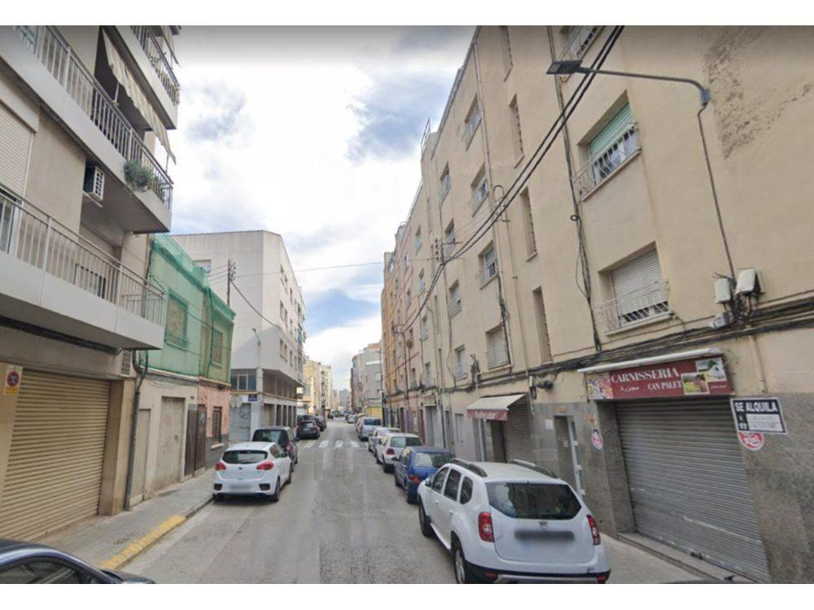
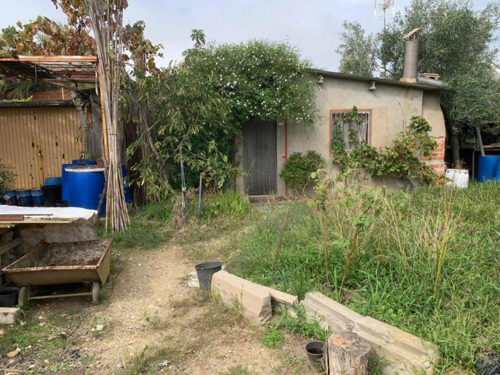
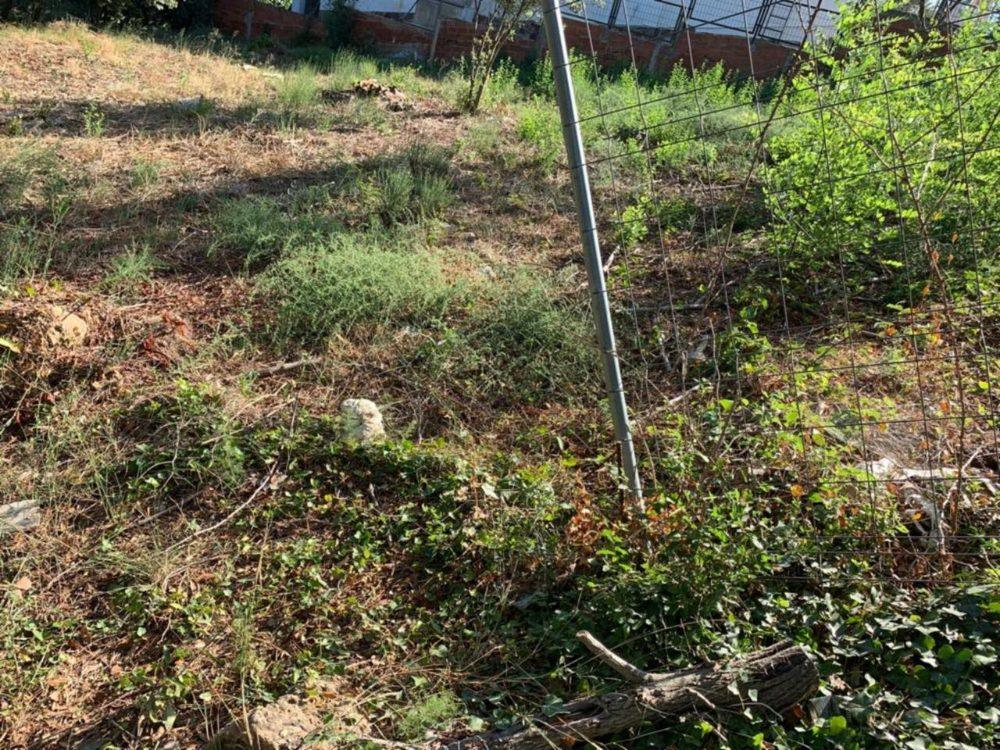
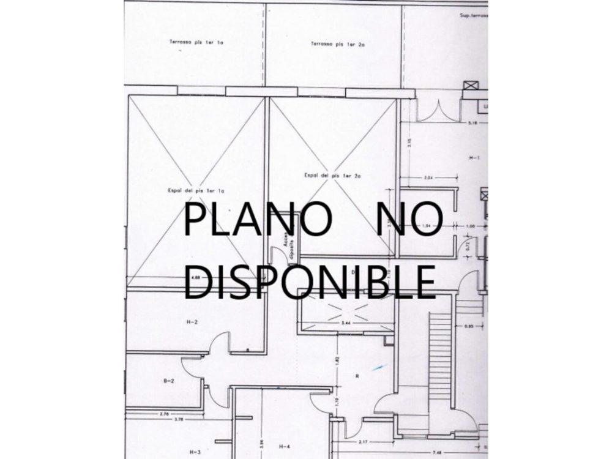
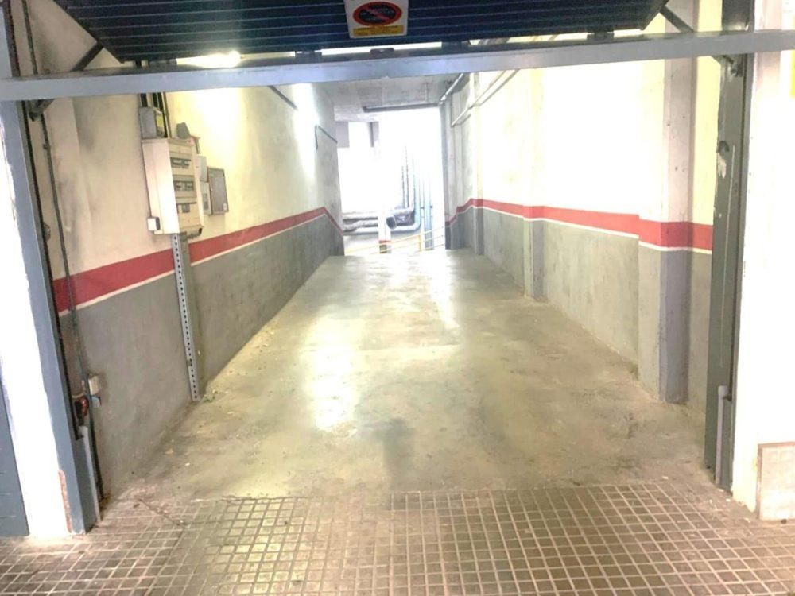
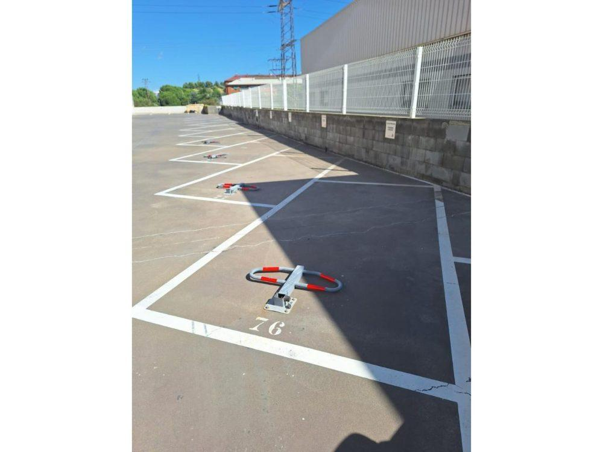
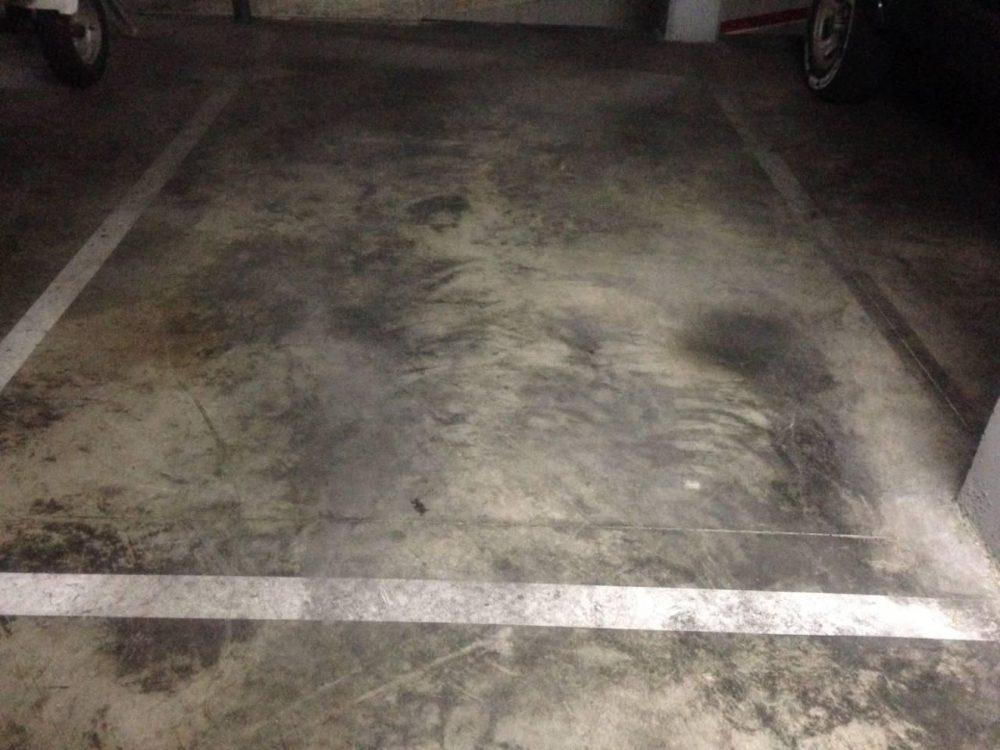

Inmobiliaria en Terrassa: pisos, casas y locales en venta
Somos la inmobiliaria de confianza de Terrassa. Oficina central en Sant Pere, 4,9 ★ en Google y una cartera de pisos, casas, locales y parkings.

19 inmueblesen nuestra cartera de Terrassa
Desde 212.100 €pisos libres, hasta 345.000 €
Casas desde 695.900 €hasta 695.900 €
Cartera en Terrassa
Inmuebles en venta en Terrassa
Sant Pere · 5Pere Parres · 3Can Parellada · 2Poble Nou-Zona Olímpica · 2Can Palet de Vista Alegre · 1Cementiri Vell · 1Les Fonts · 1Sant Pere Nord · 1Torre-sana · 1Vista Alegre · 1Ègara · 1














Comprar y vender en Terrassa
En nuestra cartera de octubre de 2026 hay inmuebles en Sant Pere, Poble Nou-Zona Olímpica, Pere Parres, Vista Alegre, Cementiri Vell, Can Parellada, Les Fonts, Ègara y Torre-sana. Entre los pisos libres, los precios van de 212.100 € a 345.000 €, con opciones para entrar a vivir y viviendas a reformar.
La Zona Esportiva ofrece pisos amplios con piscina, parking y trastero. Cementiri Vell destaca por estar frente al Parc de Vallparadís, y Sant Pere, por su mercado municipal y su oferta de plazas de parking. Para una vivienda unifamiliar, Vista Alegre es una de las zonas más tranquilas de la ciudad.
Si quieres vender, empezamos por una tasación gratuita sin visitas y sin demoras. Si compras, te ayudamos a elegir y a conseguir la financiación.
Nuestra oficina
Oficina central en el barrio de Sant Pere
Es la oficina central de D&Habitat desde 2014: aquí está la dirección de la empresa, parte de los departamentos de apoyo y equipos comerciales que operan sobre todo en el Vallès Occidental. Espacios abiertos y modernos para que te sientas como en casa.
Pla de l'Ametllera, 100, local L'Ametllera
08225 Terrassa (Barcelona)
931 70 41 89
Opiniones de clientes
Lo que dicen quienes ya han vendido con nosotros
4,9 ★ en 321 opiniones de Google. Léelas en Google Maps
«La mejor solución inmobiliaria en todo el Vallès.»Gary Acosta
«Desde el primer momento sabían cuáles eran mis necesidades y aplicaron sus conocimientos del mercado inmobiliario para valorar de manera justa la vivienda y obtener el máximo beneficio. Buenos comerciales y excelentes profesionales, ¡vendieron mi casa en tres semanas!»Joan Casanova · Rubí
«Excelentes profesionales con un trato personal muy cercano. La venta de mi piso fue muy rápida y efectiva. Estuve informada y asesorada en todo momento. Me hicieron sentir muy tranquila. Una experiencia fantástica y un servicio impecable.»Yolanda Cifuentes · Terrassa
Preguntas frecuentes
Preguntas sobre Terrassa
¿En qué barrios de Terrassa tenéis más oferta ahora mismo?
En nuestra cartera de octubre de 2026 hay inmuebles en Sant Pere, Poble Nou-Zona Olímpica, Pere Parres, Vista Alegre, Cementiri Vell, Can Parellada, Les Fonts, Ègara y Torre-sana. La cartera cambia cada semana: consulta el listado actualizado o llámanos y te avisamos cuando entre algo que encaje.
¿Qué documentación necesito para comprar una vivienda en Terrassa?
De forma orientativa, los bancos piden DNI o NIE, las últimas nóminas o justificantes de ingresos, la última declaración de la renta, la vida laboral y los extractos de tus cuentas. Para reservar la vivienda basta con tus datos de identificación. Si quieres financiarla, empezamos por un estudio financiero para saber cuánto puedes pedir.
¿Qué gastos tiene comprar una vivienda en Cataluña?
Además del precio, hay que contar con impuestos (ITP en vivienda de segunda mano; IVA y AJD en obra nueva), notaría, registro, gestoría y tasación si hay hipoteca. Como referencia general suelen sumar entre un 10 % y un 13 % del precio, según el tipo de vivienda y la situación de cada comprador. Pide tu caso a nuestro equipo para tener la cifra exacta.
¿Cómo pido una visita o una cita en la oficina?
Llámanos al 931 70 41 89, escríbenos desde el formulario de contacto o pulsa «Pedir visita» en la ficha del inmueble. También atendemos con cita online. Nuestra oficina central está en Pla de l'Ametllera, 100, en Terrassa.
¿Quieres vender tu vivienda en Terrassa?
Tasamos tu vivienda sin visitas y sin demoras. Cuéntanos dónde está y te llamamos.
Pedir tasación gratuita